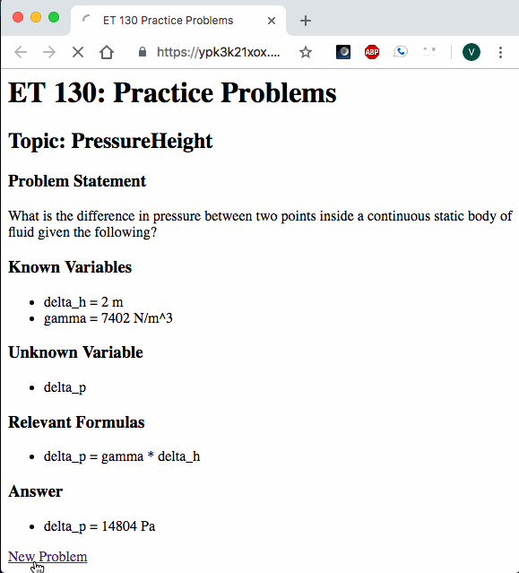
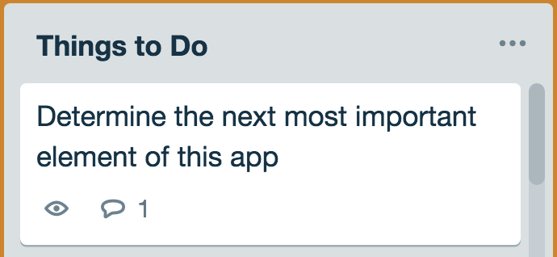

Project Journal: January 9, 2019
BART commutes allow time to work on your laptop if you can find a seat. If not, you can still read/type something on your phone. But if there are delays, and trains are packed, you pretty much find the one spot where you can look without making eye contact with your 6-inch-close neighbors. I was in between the last two modes of existence during my commutes.
Slow progress is progress?
The problem incurred by building momentum is having to maintain it. This is when I tamper expectations for the current day and get the minimum amount of work done to keep some semblance of pace.
I completed at least one task on each of my three projects today, and they were short and sweet so I'll have today's post follow suit:
et130webapp
It was really fun to work on this one today. I bore the positive fruits of how I setup my files initially. I added a new topic to the problem generator as well as created and passed both unit and functional tests for it. I was able to reuse much of my code from the first topic (Shear Stress), and will continue to create templates when the right opportunities arise.
The topic added is the linear Pressure-Height relationship existing in static continuous bodies of fluids, such as a tank of water that is still. Here it is in action:

ThoughtBoard
I started today chewing on this task for a bit:

The decision was:
- Allow user to edit a category
- Allow user to edit a thought
This stayed true to the core functionality statement, since it would start to unpack the iterative
functionality. I played around with form elements in the index.pug template without much
success, so I chose to take the contenteditable attribute for a spin:
// `thoughts` is an object with {category: thought} pairs
each val, index in thoughts
ul
li
div(contenteditable = "true" value=index)=index
ul
each thought in val
li
div(contenteditable="true" value=thought)=thought
The result was as follows:

There's much to be said about if this path will lead me to fulfilling the iterative grouping/categorizing functionality--we'll find out soon!
FeelsTracker
I wrote and passed the first functional test for this app, which was very similar to that for the ThoughtBoard, since they both are currently using forms:
test("POST request responds with correct data", function(done) {
chai
.request("http://localhost:8080")
.post("/")
.type("form")
.send({
emotion: "test_emotion"
})
.end(function(err, res) {
// This way of creating a Date for testing
// may not work if format changes
let emotionDate = new Date().toDateString();
assert.equal(res.status, 200, "Response status should be 200");
assert.include(res.text, "test_emotion");
assert.include(res.text, emotionDate);
done();
});
});
I'm looking to continue with a greater zeal tomorrow and the next few days so that I set myself up well for the second week of these projects.